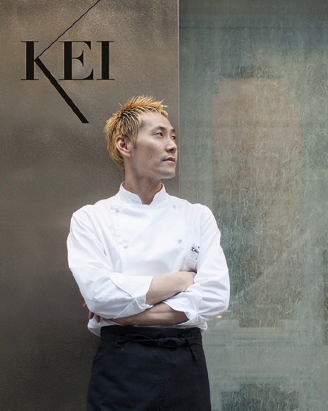
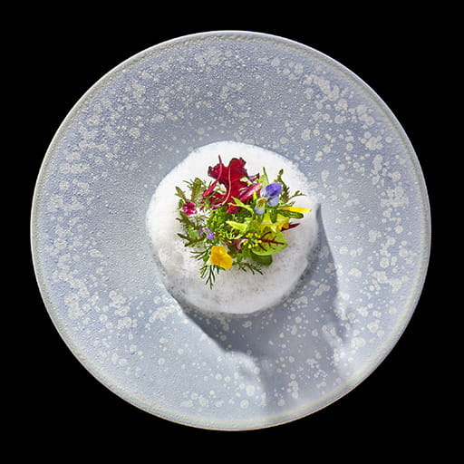
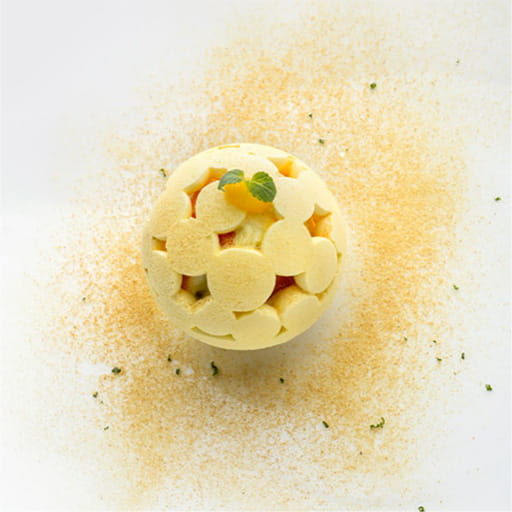

Maison KEIは、パリの「Restaurant KEI」と
和菓子屋「とらや」がはじめるフレンチレストランです。
パリや東京の喧騒から離れ、気軽に、少しゆったりと、
私たちの料理やお菓子をお召し上がりいただきたいとの想いから、
食材と水の豊かな御殿場市東山に店を構えます。
ひとつひとつの食材を大切に、素材のおいしさを最大限引き出す、
小林 圭氏が創造する料理をお楽しみください。
-
STORY
-
「Restaurant KEI」のオーナーシェフ・小林圭氏との出会いは、2010年。虎屋の18代当主・黒川 光晴がフランス・パリに勤務していたときのことです。当時、小林氏はご自身のレストラン「Restaurant KEI」の開業準備の真っ只中で、黒川は、食材調達に同行させていただいたり、厨房作業を見学させていただくなど、パリでのレストランの開業準備を目の当たりにし、多くの学びを得ました。2011年の開業後も交流が続き、常に味を突き詰め極められている小林氏の姿勢や活気に満ちたレストランの様子に大変感銘を受け、「いつかご一緒できる機会があれば」という思いを抱いていました。
そのようなご縁で、小林氏と共に、5年ほど前より御殿場市においてレストランの開業準備を進め、2021年初春のオープンを目指しています。
-
PROFILE
-
-
 -
小林 圭Kei Kobayashi
長野県生まれ。長野、東京、フランスと料理人としての研鑽を積む。フランスでは南仏やアルザス地方などの有名レストランにて地方の豊かさを学び、そしてパリへ。パリでは世界的なシェフ、アラン・デュカス氏のレストラン「アラン・デュカス・オ・プラザ・アテネ」に職を得て７年間働く。この間最後の4年はスーシェフを務めた。2011年3月にオーナーシェフとしてパリに「Restaurant KEI」をオープン。翌年2012年にフランス版ミシュランガイドにて一つ星、2017年に外国人オーナーシェフとして初めて二つ星を獲得。2020年1月には日本人シェフとして初の三つ星を獲得。
 
 -